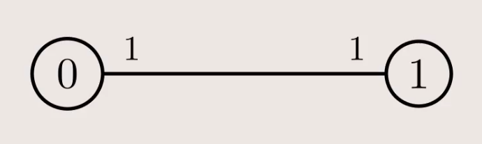
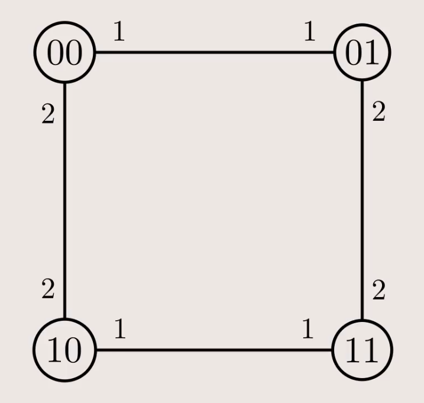
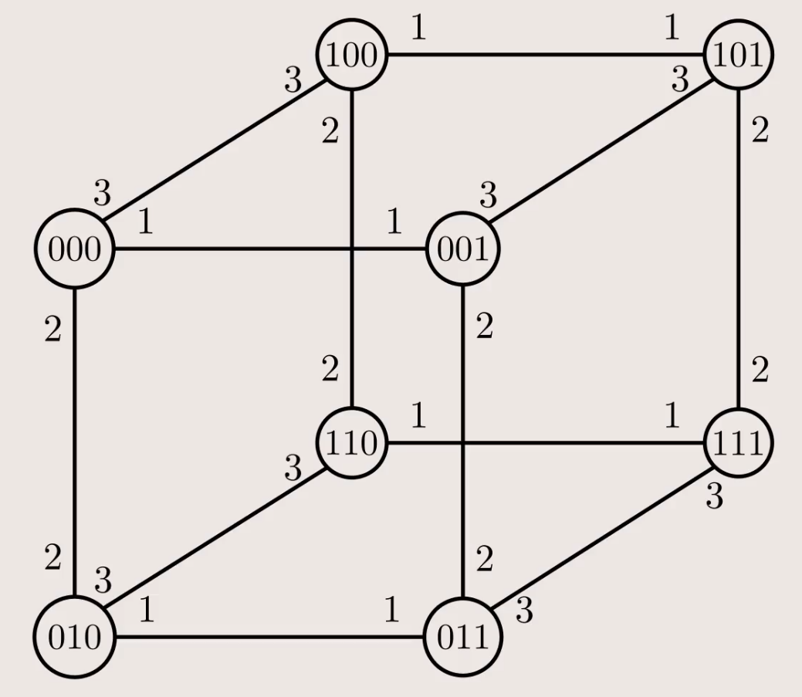
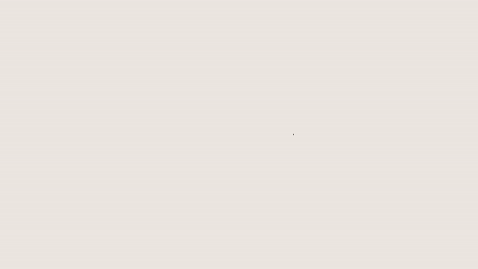

ADRC - Lesson 05
Indice
I protocolli di broadcasting visti nelle precedenti lezioni risultano parecchio dispendiosi nel caso in cui vengano eseguiti in una rete molto densa1.
Nel caso limite in cui la rete sia una clique2, il protocollo di flooding studiato ha una message complexity di \(\Theta(n^2)\).
Viceversa però, nel caso in cui la rete sia un anello o un albero, il protocollo è ottimale, ovvero verrà trasmesso un messaggio per ogni nodo, risultando
in una message complexity di \(\Theta(n)\).
Una buona idea sarebbe quindi quella di calcolare uno Spanning Tree della rete, e di eseguire il protocollo di flooding con uno scambio di messaggi ottimale. Precomputando lo spanning tree si potrebbe anche eseguire il protocollo tutte le volte che si desidera. Un problemma non banale che occorre però è il calcolo di uno spanning tree in maniera distribuita. Inoltre, pure assumendo di poter ottenere uno spanning tree con poche risorse, questa non è una struttura stabile. Infatti, in una rete reale capita molto spesso che delle connessioni si interrompano, e se si rimuove un arco da una rete con una struttura ad albero, essa verrà disconnessa3. In questo caso si dice la rete è 1-tollerant. In generale, un grafo si dice \(k\)-tollerant quando anche a fronte della rimozione di \(k\) archi, esso rimane connesso.
1 Labeled Hypercube
In questa sezione verrà studiato il problema del broadcasting su ipercubi e verrà mostrato come l'aggiunta della conoscenza della rete
da parte dei nodi, combintata alla simmetria della rete stessa, può portare alla creazione protocolli asintoticamente migliori del Flooding.
Generalmente in un contesto reale si vuole costruire reti che abbiano le seguenti proprietà:
- un diametro piccolo (\(O(1)\) o \(\texttt{poly-log}\)), in modo tale da ridurre i tempi di comunicazione tra i nodi.
- il grafo deve essere sparso, risparmiando in termini di risorse per la creazione di link.
Si osservi che riducendo il grado massimo di un grafo, come conseguenza si otterrà la sua sparsificazione4.
Un'altro vantaggio di un grafo sparso è la sua scalabilità, ovvero la capacità di non comportare eccessivi costi nel caso di aggiunta di nuovo nodo.
Per esempio, una clique non è molto scalabile, in quanto ogni volta che viene aggiunto un nuovo nodo bisogna creare \(n - 1\) nuovi links.
Invece l'aggiunta di un nodo su un grafo a forma di lista comporta l'aggiunta di un solo arco.
Non è tutto oro ciò che luccica: anche se un grafo a lista è estremamente scalabile e sparso, esso comporta alcuni cruciali svantaggi.
Il primo è che ha come diametro il valore massimo che si può presentare (\(n - 1\)).
Il secondo è la sua poca resistenza, infatti se si rompe anche solo un link il grafo si disconnette.
Contrariamente, una clique ha diametro minimo (ovvero 1) risultando in tempi di comunicazione ottimali.
In oltre prima di "rompersi" bisgona rimuovere almeno \(n - 1\) archi.
Una struttura più equilibrata rispetto alle precedenti è la struttura a griglia bidimensionale.
In griglia di \(n\) nodi composta da \(\sqrt{n}\) righe e colonne, il grado massimo è 4, mentre il diametro è \(2 \sqrt{n}\).
Inoltre è abbastanza scalabile, infatti si possono collegare tra di loro più griglie semplicemento affiancandole e aggiungendo \(\sqrt{n}\) archi.
Anche se \(O(\sqrt{n})\) è un buon miglioramento rispetto a \(n\), si può ottenere di meglio.
La struttura che offre un buon compromesso in termini di grado massimo, densità, resistenza, diamtero e scalabilità è l'ipercubo. È già noto che in un ipercubo \(d\)-dimensionale il numero di nodi è esattamente \(n = 2^d\), e di conseguenza \(d = \log_2{n}\). [… da sistemare] Inoltre ogni nodo ha grado esattamente \(d\), quindi il numero complessivo di archi è \(m = \frac{nd}{2} = \frac{n\log_2{n}}{2}\).
| Grafo | Diametro | Grado |
|---|---|---|
| Clique | \(\Theta(1)\) | \(\Theta(n)\) |
| Lista | \(\Theta(n)\) | \(\Theta(1)\) |
| Griglia | \(\Theta(\sqrt{n})\) | \(\Theta(1)\) |
| Ipercubo | \(\Theta(\log{n})\) | \(\Theta(\log{n})\) |
Consideriamo il problema del broadcasting su un ipercubo
Oltre alle solite restrizioni già viste (unique initiator, total reliability, bidirectional links e connectivity), in questa variante
si assume che ogni nodo sa di essere in un labeled hypercube \(d\)-dimensionale.
Questa particlare rete ha una struttura a ipercubo di dimensione \(d\), i cui link e nodi sono etichettati come segue:
- ogni nodo è univocamente eithcettato con una stringa in \(\lbrace 0, 1 \rbrace^d\). Inoltre ogni nodo ha come vicino i nodi le quali etichette differiscono di un solo bit.
- Ogni arco è etichettato con un numero nell'intervallo \(\left[ d \right]\), in modo che tale etichetta rappresenta l'indice del bit per il quale i due nodi estremi differiscono (partendo a contare per esempio dal bit meno significativo).

Figura 1: \(d = 1\)

Figura 2: \(d = 2\)

Figura 3: \(d = 3\)

Figura 4: Generazione Ipercubo
In maniera un po' più formale possiamo definire l'insieme dei nodi come \(V \equiv \lbrace \overline{x} \mid \overline{x} \in \lbrace 0,1 \rbrace^d \rbrace\).
Applicando semplicemente il protocollo Flood su questa rete la message complexity sarà \(O(n\log{n})\).
[da finire …]